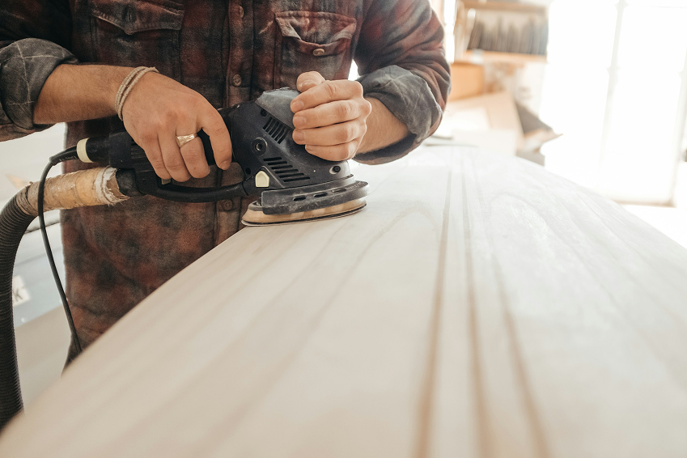
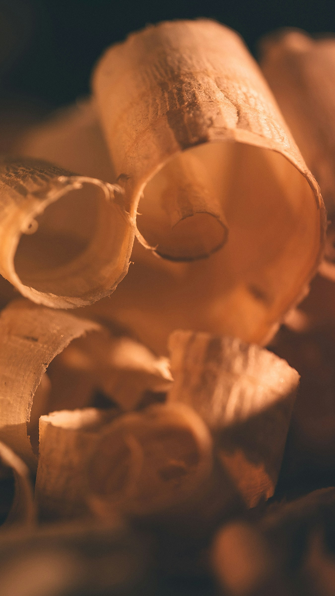
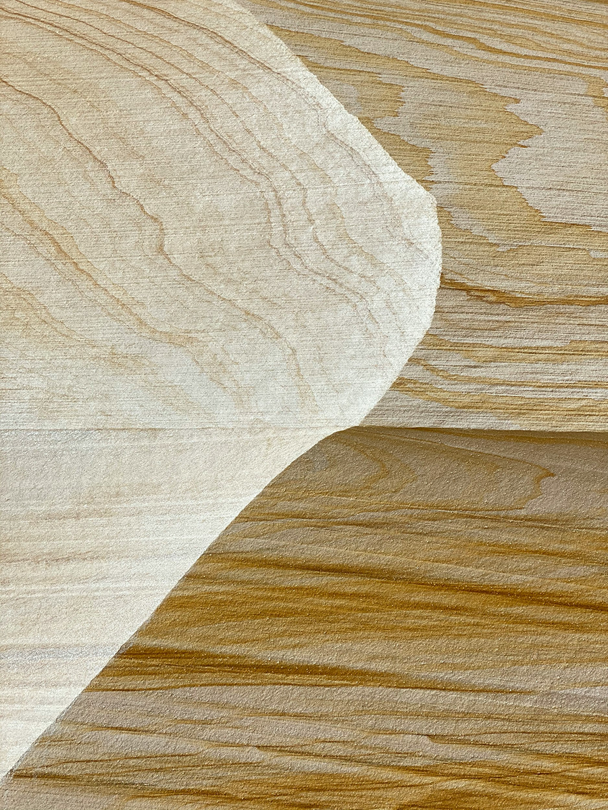
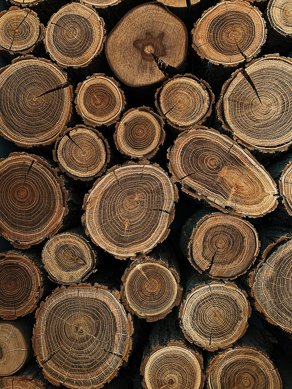
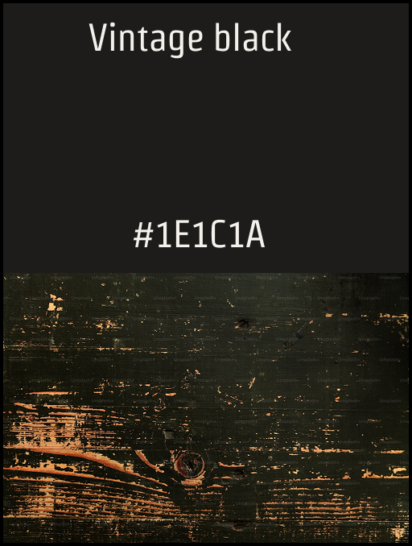
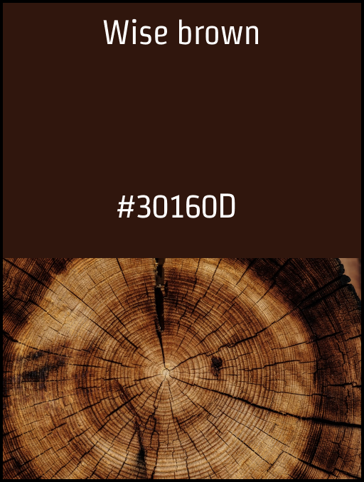
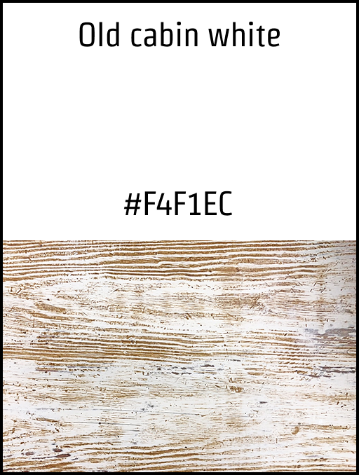

Tom The Builder AB - TTP BYGG
An independent builder deserves an identity that carries weight.
This branding case was developed as part of my UX design education, in collaboration with a real client — a carpenter based outside Uddevalla.
The goal was to create a brand identity that reflected both his craftsmanship and personality, while also feeling modern and relevant in a competitive market.
References & direction
The direction pulled from Scandinavian workshop typography, hand-printed trade signage, and the quiet confidence of mid-century identity work.




Starting from a name
I started by trying to understand him as a person and what he values in his work. It quickly became clear that craftsmanship and the material itself — especially wood — were really important to him.
With that in mind, I explored different directions, but kept coming back to something simple and honest. I wanted the brand to feel timeless and well-made, rather than trendy.
The idea I moved forward with was inspired by the natural structure of wood. I created a logo based on tree rings, almost like an X-ray of the material. For me, it became a way to highlight both the raw material and the precision in his craft.
I worked through several iterations, adjusting small details to get the balance right between simplicity and character.



A complete small-business kit
The final result is a minimal and clean brand identity that reflects both the craftsmanship and a sense of quality.
Out of all the proposals from the class, he chose to move forward with my concept, which felt like a strong confirmation that I had captured something that resonated with him.
It’s a project that really shows how I like to work — starting from something real and building a concept that feels both simple and meaningful.
Tom wanted it to say TTP BYGG AB so I changed that from TOM THE BUILDER.
And this is the result Tom wanted to go with after seeing my classmates’ ideas.